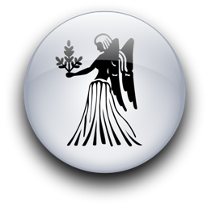

Женщина Дева и Мужчина Дева
-

Как это на них похоже! Он с головой ушел в бесконечные вычисления, она не сводит с него умоляющего взгляда. Не имеет значения, подсчитывает ли он подоходный налог или вычисляет положение небесных тел.
Важно другое: он очень долго не замечает этих умоляющих взглядов.
Мужчине-Деве нравится удивлять чем-то подругу-Деву. Женщина-Дева кажется такой рассудочной, даже бесстрастной, но и она жаждет прикосновения любимого человека. "Ну же, погляди на меня, - молят ее глаза, - ну хотя бы возьми за руку!" Всю ночь он просидел на краешке ее кровати (отсюда было удобнее всего следить за перемещением стрелок на циферблате часов), и что? Да ничего... Впрочем, нет. Время, от времени он ей дружески подмигивал.
С этим мужчиной лучше не изъясняться на языке взглядов - вот что должна усвоить женщина-Дева. Попробуйте язык жестов, выстукивайте любовное послание нежными пальчиками на его руке, ошарашьте его легким поцелуем в щеку, мимолетным, как прохладное прикосновение снежинки. И тогда, со временем, если влечение взаимно (а вероятнее всего, оно взаимно, иначе он вообще бы не стал тратить на нее времени и рисковать своей бесценной независимостью, даже этот упрямец капитулирует. Рано или поздно всемогущая страсть подчинит его рассудок сердцу. Рано или поздно... Раньше, чем надеется женщина-Дева, пессимистичная по натуре, но позже, чем это произошло бы с мужчинами, рожденными под другими солнечными знаками. Все относительно.
Естественно, ситуацию всегда можно перевернуть. И она способна уткнуться носом в книгу или вязать часами, игнорируя его жалобные взгляды. Тогда ему следует мягко взять ее руку или... Сами подумайте! Ум Девы необычайно изобретателен, когда соглашается сотрудничать с сердцем.
Этот мужчина, несомненно, смышлен, да женщина тоже. Они будут восхищаться умом друг друга, вести долгие беседы, вместе поддерживать стерильный порядок в доме, читать друг другу, разгадывать кроссворды.
В сущности, эти двое, как правило, умеют угодить друг другу. Девы как огня боятся пошлости. Вероятно, их близость будет скорее нежной, нежели томно-чувственной или пламенной. Им могут помешать присущие Деве консерватизм и холодность, мелочная придирчивость, разжигающая ссоры из-за пустяков. Они склонны входить во все детали, выверять чуть ли не по часам свое любовное расписание. Этой паре надо усвоить, что страсть не признает графиков и регламентов.
Иногда Девы ввергаются в безумную неразборчивость, и такое полярное изменение сексуальности этого знака входит в противоречие со свойственными ему прямодушием и целомудрием.
Успех отношений между двумя, рожденными под знаком Девы, зависит от того, сумеют ли они, вглядевшись друг в друга, как в зеркало, узнать собственные недостатки и исправить их, смогут ли различить собственные достоинства и гордиться ими. А этим двоим есть чем гордиться: они наделены естественной учтивостью, разумом, искрящимся юмором. Благородство и чистота духа мягко светятся в их ясных, безмятежных глазах. Они с готовностью слушают, когда другие говорят, и спокойно работают, когда другие развлекаются.
Поскольку Девы стремятся все облечь в строгие формулировки, выведем для них определение любви. Любовь - это, очевидно, свидетельство глубокой, неодолимой потребности всех мужчин и женщин в том, чтобы по крайней мере одна личность принимала их полностью, такими, как есть. Со всеми причудами, пороками, ошибками, глупостями, грехами и прочим хламом. Так прекратите же придираться и обижать друг друга, а также всех остальных. Ну, можете немножко поворчать. Иногда это даже полезно.